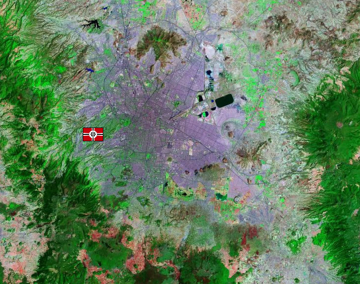

Mexico City Mexico City
North America, Central Mexico Urban Mountain Fortification A minor outpost clinging to the old metropolis of Mexico City, this fortification serves as the Zeon front lines against South America, keeping Federation forces from interfering in the Duchies actions in North America. It is heavily guarded with Zakus, but its air support is limited, partially due to the high altitude the base is situated in, and partially due to constant skirmishes with the Federations undeniable air superiority in South America. Mexico City  |